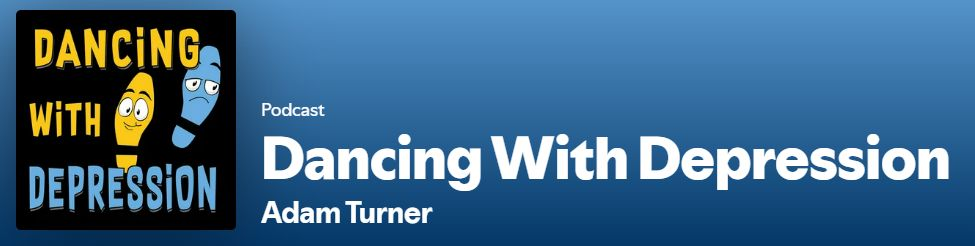
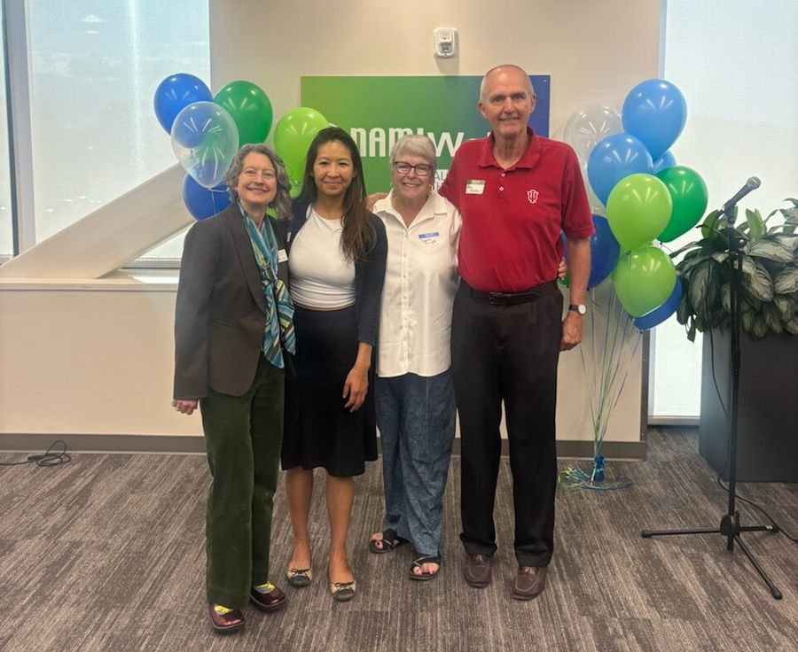
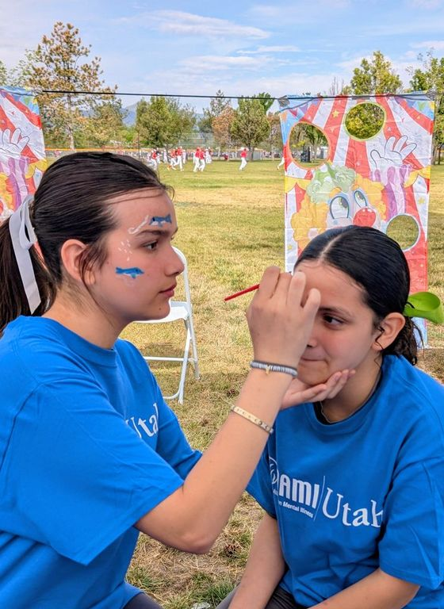

Donate
Our Latest Initiatives
Support Dancing With Depression Podcast by Adam Turner
Reducing the stigma surrounding depression is essential to encouraging people to seek professional help. We appreciate Adam Turner’s podcast, Dancing With Depression, which promotes open conversations about depression through personal experiences and interviews with experts.
What a wonderful coincidence that the podcast shares a nearly identical name with our organization, Dance with Depression! Even more remarkably, we share the same philosophy: life with depression is like a dance, with changing rhythms, challenges, and opportunities to regain balance. Adam’s willingness to share his personal journey helps others recognize that depression can affect anyone, regardless of background, and that no one needs to face it alone.
In recognition of the podcast’s contribution to reducing stigma, Dance with Depression is delighted to offer a $500 matching grant to support its continued operation.
From December 1, 2026, through March 1, 2027, we will match donations dollar for dollar, up to $500, with the goal of raising $1,000 for the podcast.

NAMIWalks Utah 2026
With much trepidation, Eva signed up to chair the upcoming 2026 charity walk for NAMI Utah again! She also offered to raise funds through Dance With Depression for the walk.
Dance with Depression has committed to match 1X funding up to $5000 for the charity walk event NAMIWalks Utah 2026.
Donations will provide critically needed operational funds for NAMI Utah to continue to provide FREE mental health resources and support to those suffering from mental illness and their loved ones. These services include coursework, peer-led support groups, lectures, and suicidal prevention training.
Learn more about the joyous family-oriented event at www.namiwalks.org/utah
Donations accepted from 1 Jan 2026 to 30 May 2026 only.
Outcome Report
We did it! NAMIWalks 2026 yielded 31 corporate sponsors and nearly 1000 attendees. We raised 90,000 of funding of which $6000 was donated by the match funding initiative by Dance with Depression. We appreciate the generous donations of $3000 from our donors.
On 8 October 2026, NAMI Utah was so kind as to giving an award of 2026 Volunteer Award to Eva. Below is the photo with Robin Holcomb, ED of NAMI Utah, and our event honoree Charon and Eric Rumples.



